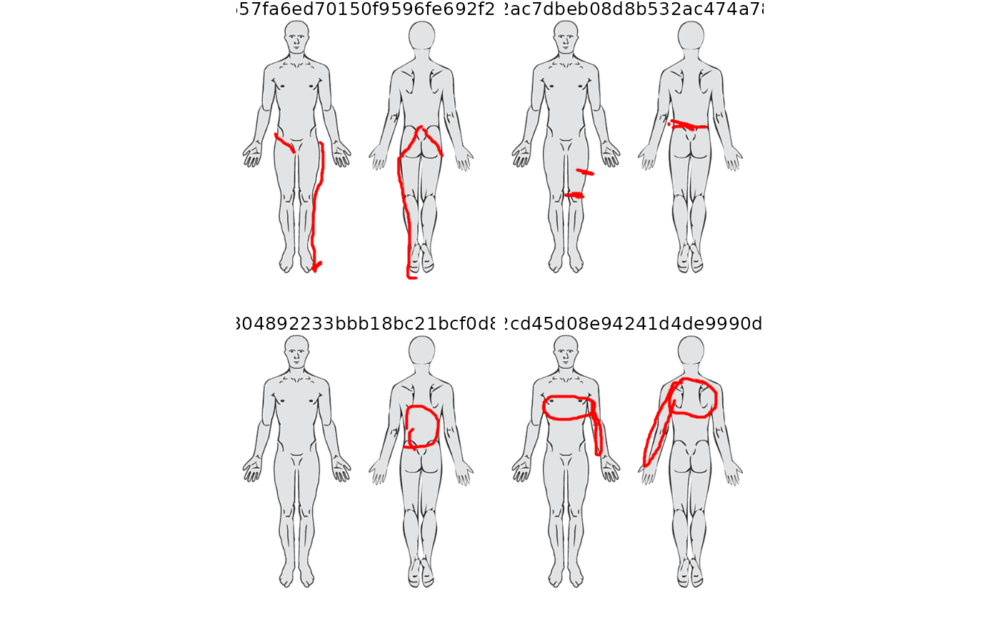

Plots the .rgba raster arrays stored in the pdr_list column of a
pdr_tibble as a ggplot, one facet per row of .data, using
ggplot2::annotation_raster(). Optionally draws a background image beneath
each raster. See pdr_match() for the definitions of pdr_tibble, pdr_list
and pdr_drawing.
Usage
pdr_plot_rgba(
.data,
pdr_col = pdr_data,
background_image = NULL,
include_id = FALSE,
only_alpha = FALSE,
ncol = NULL,
nrow = NULL
)Arguments
- .data
A pdr_tibble (see
pdr_match()) whose pdr_drawings contain an.rgbaelement. Add it first withpdr_add_rgba().- pdr_col
The pdr_list column in
.dataholding the pain drawings (tidy-eval, unquoted). Defaults topdr_data.- background_image
Optional background drawn beneath each drawing. Either a path to a PNG file (character string ending in
.png) or a numeric raster array as returned bypng::readPNG(). IfNULL(default), no background is drawn. Usepdr_example_file()to get the path to a bundled background.- include_id
Logical. If
TRUE, the.idof each drawing is shown as a facet strip label above each panel. Default isFALSE.- only_alpha
Logical. If
TRUE, pixels with alpha > 0 are drawn opaque black and pixels with alpha == 0 are drawn white (still transparent), to show which pixels have been drawn on. Default isFALSE.- ncol, nrow
Number of columns and rows, passed to
ggplot2::facet_wrap(). If both areNULL(default),facet_wrap()chooses the layout.
Value
A ggplot2::ggplot() object with one facet per drawing.
Examples
pdr_example_data[1, ] |>
dplyr::mutate(pdr_data = pdr_add_rgba(pdr_data)) |>
pdr_plot_rgba()
 # \donttest{
pdr_example_data[1:4, ] |>
dplyr::mutate(pdr_data = pdr_add_rgba(pdr_data)) |>
pdr_plot_rgba(
background_image = pdr_example_file("bg_full_body.png"),
include_id = TRUE,
ncol = 2
)
# \donttest{
pdr_example_data[1:4, ] |>
dplyr::mutate(pdr_data = pdr_add_rgba(pdr_data)) |>
pdr_plot_rgba(
background_image = pdr_example_file("bg_full_body.png"),
include_id = TRUE,
ncol = 2
)

# }